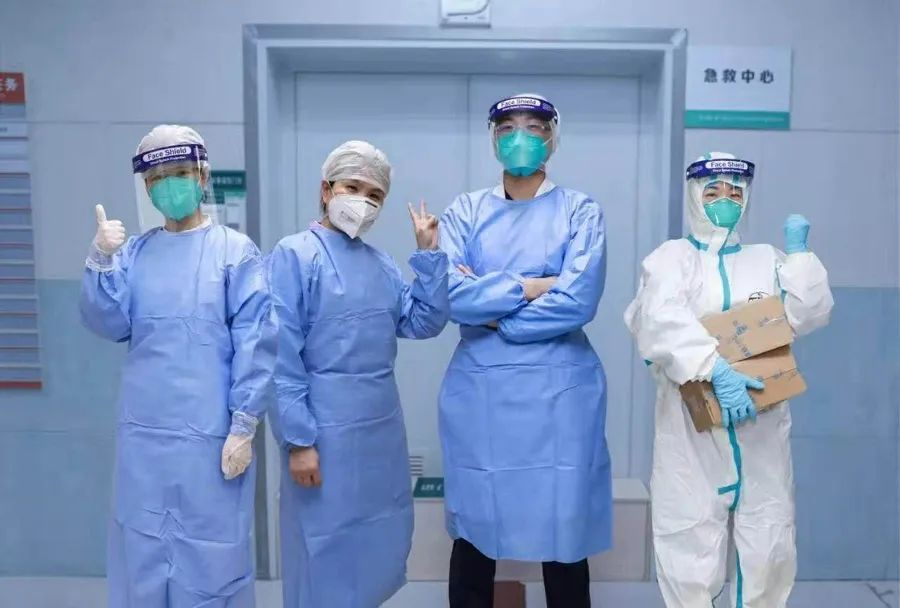
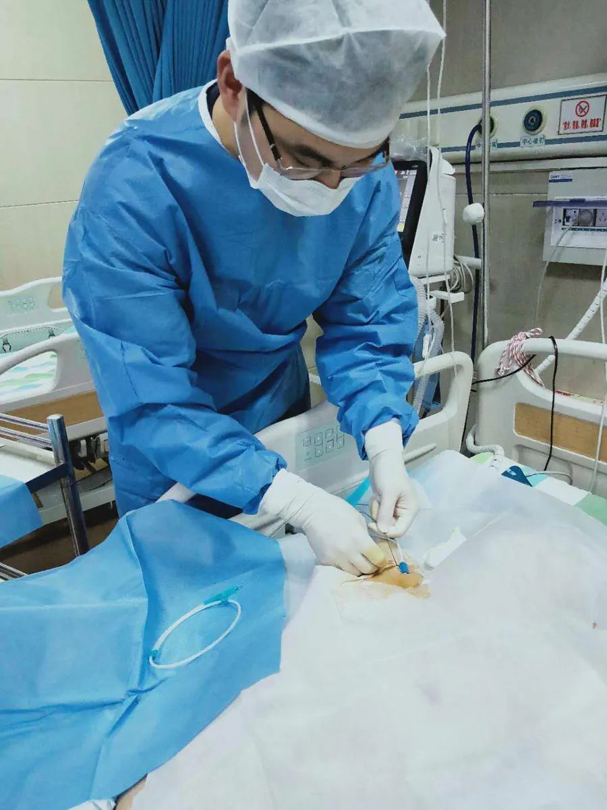

口述实录丨武汉早批参战医生：我得到的信息比别人多，承受的痛苦就比别人多
原文链接 备份链接 后来我回想，也挺后怕的。我接诊阿姨的时候，给她查体，她对着我咳嗽过。 口述 | 宋亚锋 整理 | 黄 祺 “突然听到一个消息，心情很不好，内心很恐惧，虽然根本不认识，但感觉很难过，一路走好，希望你的家人能够渡过难 …
澎湃新闻记者 薛莎莎 实习生 王月伦
赵智刚拎着蔬菜水果，来到家门口，放下东西，他给妻子沈杨发了条信息，让她带着俩女儿出来拿，他站在十米开外，远远的看一眼女儿们。小宝一岁多，大宝已经三岁多，大宝认得爸爸，冲过去索要一个“抱抱”，被沈杨拦住。

赵智刚。 本文图片由受访者提供
赵智刚叮嘱几句，告诉孩子们他把外面的病人都治好了就能回家。前后约一分钟，他就转身走了，科室还有很多工作等着他处理。
这一幕常发生在武汉大学中南医院急救中心副主任医师赵智刚家门口。自疫情开始，他就坚守在医院的重症隔离病房，带领全组人员奋战一线。1月20日，他被确诊新冠肺炎，因不想占用床位，他拿了药回宿舍隔离治疗。
自我隔离康复后，他主动请缨返岗，和组员们并肩作战。
赵智刚说，自己并非公众口中的“英雄”，只是做了医生该做的事。他没有沉溺于媒体和公众的“点赞”，他更多是反思：同事们多有感染，在疫情来临前期，他们在诊治和管理上出现了什么问题？
2月19日晚，在与澎湃新闻记者（www.thepaper.cn）的交谈中，赵智刚多次强调，面对自然界给人类带来的新疾病、新挑战，市民、医护人员、卫生体系工作者都要“尊重自然规律”，只有用科学的态度对待它，才能打赢这场无硝烟的战争。

赵智刚和同事们。
确诊：为节省床位，回家隔离治疗
2003年非典那年，赵智刚毕业，后在某部队医院感染科、急诊科、急诊重症监护室工作十余年。2019年，他转业来到武汉大学中南医院，任急救中心病房主任一职。
说起自己感染新冠病毒时的症状，赵智刚“轻描淡写”道：“有些咳嗽、发烧、乏力。”虽然他认为自身抵抗力还不错，但当时科室已有护士确诊，他还是检查了一下。结果出乎他的意料，1月20日，他被确诊了。
赵智刚说，他算是早期被确诊感染新冠病毒的医护人员之一。
此前，赵智刚所在的科室被临时改造成接待发热病人的隔离病房。他和全科室人员都忙活着发热病人的收治工作。赵智刚每天负责20位病人，并参与30位病人的会诊，每天工作十五六个小时才能休息。
在赵智刚看来，那时，正是抗疫的“慌乱”阶段。来医院的发热病人越来越多，病房内的床位100%甚至120%收治病人，很多病人一床难求。
看着满员的病房，为了不占用床位，确诊感染新冠病毒的赵智刚结合检查结果和临床表现判断自己属于轻症，随即拿了药回到宿舍隔离治疗。
从1月20日到2月5日，是赵智刚隔离进行自我治疗的日子。
如今，被问及确诊和隔离治疗时的病情变化和心理状态时，赵智刚避开不谈，语调轻松地称自己只是轻症，问题不大，“有信心能在家隔离自愈”。
那段时间，妻子沈杨每天都会电话追问他是否有气喘等症状，赵智刚都称没有。关于病情，他总不愿多说。
这位40岁的中年男人不想在妻子和孩子们面前流露出担心和恐惧。
即便如此，药学专业出身的沈杨还是通过CT片子感知到丈夫身体的不适，“他的肺部炎症已经很明显了，不可能没有气喘胸闷等症状。”
治疗的半个月时间，丈夫的病情具体到了什么程度，沈杨无从得知。
也是在赵智刚康复之后，他才告诉妻子，自我治疗的头几天，他不仅咳嗽，反复发烧，还有气喘胸闷等症状。因对这个新疾病的认知少，也并不清楚自己病情会不会迅速恶化，每到夜深人静时，他常一个人黯然落泪。

厚厚的防护服下的赵智刚和同事。
返岗：这是场长期战，我必须顶上
不幸中的万幸，赵智刚熬过头三天，烧终于退了，身体逐渐好转。从确诊到隔离自我治疗，半个多月后，他身体康复。
妻子沈杨知道，丈夫是个闲不住的人。
即便生病期间，赵智刚也想着利用所学，多帮助市民。于是，他通过中南医院官方微信公众号的“在线咨询”入口，居家帮助有健康疑问的市民提供咨询服务。他每天坚持在线问诊10个小时以上，截至2月6日，共为743人次的患者提供在线问诊服务。
赵智刚的闲不住，还体现在他坚持申请返回一线。赵智刚说，从对病人的临床观察来看，未达重症的新冠肺炎患者，治愈需半个月，重症的需一个月左右，危重症的需一个月以上，“这是场长期战，我必须顶上。”
看着身边陆续有同事被感染，赵智刚也流露出感性的一面。他说，一方面，他回家治疗的这段时间，医院临时安排一位老医生顶上，赵智刚实在于心不忍。另一方面，科室的医护人员都超负荷工作、辛苦的战斗着，“我不能拖了全组的后腿”。
赵智刚还说，前后与他一起返岗的，还有另外五名同事。同事们陆续染病，他很理解坚守抗疫的同事们心中的不安。他们的“回归”对这些同事来说，是莫大的鼓舞。
护士郭琴是赵智刚所在科室里第一位确诊感染新冠肺炎的医护人员，她1月12日确诊，后住院治疗，康复后同样选择返岗继续工作。返岗后护理重症病人的她，工作比病前还要重些。但她称，她染病后，其他同事都很害怕很焦虑，担心自己也染病，“现在我回来了，他们也能放心些。”
“之前，科室的微信群里传递的都是负能量。我们回来后，这些同事们脸上都能见着笑了。工作之余，互相开开玩笑，气氛也轻松了不少。”作为病房主任，赵智刚是“主心骨”。
“感染了，大不了回家休息几天呗！”
这虽是玩笑话，但更像是他们给自己心中打了一针强心剂。

赵智刚在安排工作。
反思：疫情初期，应尊重疾病的自然规律
赵智刚治愈后主动请缨返岗一事，经媒体报道后，引发公众点赞。
在赵智刚看来，自己并非公众口中的“英雄”，只是做了医生该做的事。他没有沉溺于媒体和公众的“点赞”，他更多是反思：同事们多有感染，在疫情来临前期，他们在诊治和管理上到底出现了什么问题？
回溯自己感染新冠肺炎的过程，赵智刚称或许是自己接诊病人时，没做好防护措施被传染，也或许是被同科室其他医护人员传染。
1月初，赵智刚曾接到通知要求关注发热病人。之后，科室陆续收治了很多发热病人。
那时，“新冠肺炎”暂被称为“不明原因肺炎”，医护人员乃至相关专家对这一新的疾病认知都不清晰。
“接待病人时，我们只是做了一级防护，并没有把它当做新的、未知的、传染性非常强的疾病来对待。”赵智刚反思，自己还是大意了，“我曾搞过肝病、肺结核，也曾一夜接诊过数十位禽流感患者，对待新冠肺炎本不该大意的。”
基于此，赵智刚觉得，正是在疫情初期，各方面对这一疾病认识不到位，加之疏忽大意，导致科室医护人员被感染。、
在赵智刚看来，这种“疏忽大意”就是“未尊重自然规律和科学道理”。
他说，当出现这类未知疾病时，医护人员以及公共卫生系统工作人员就应该保持十分的警惕，做好防护和隔离，并以科学的态度来研究它、认知它，最终战胜它。
“要做到尊重自然规律，就要先尊重掌握规律和科学道理的人。”赵智刚说，这次疫情是自然界给人类带来的全新挑战，市民、医护人员、卫生体系的工作人员以及其他各个方面，都应该从现在做起、从身边做起，尊重自然规律，应该有意识地培养下一代树立意识，以防以后再次发生类似疫情时，措手不及。

赵智刚治疗病人。
想家：常过家门而不入，女儿大哭要爸爸回家
返岗后的赵智刚每隔几天，就拎着蔬菜水果，来到家门口，放下东西，给妻子沈杨发个信息，让她带着俩女儿出来拿，他站在十米开外的地方，远远的看一眼女儿们。小宝才一岁多，大宝已经三岁多了，认得爸爸，冲过去索要一个“抱抱”，被沈杨拦住。
赵智刚叮嘱几句，告诉孩子们他把外面的病人都治好了就能回家。前后约一分钟，他就转身走了，因为科室有很多工作等着他处理。
赵智刚确诊之后就单独在宿舍住，妻子和母亲没过多久也发烧了，二宝也出现了类似症状。当时医院每天的核酸检测试剂量少，家人不想占用名额，未做检测直接拿药在家隔离治疗。幸运的是，目前三人都已经康复。
确诊、自愈、返岗，至今，赵智刚已经一个多月没能抱抱两位“小公主”了。
在妻子看来，丈夫平日里可谓是个“女儿奴”。他很注重家庭欢乐的氛围，工作之外一有时间，就陪着孩子们，总是想法子让孩子们度过快乐的家庭时光。现在虽然见不到面，赵智刚也常常和女儿们视频聊天。
21日中午，沈杨有点无奈的告诉澎湃新闻，大宝刚和丈夫视频通话，现在在大哭，一边哭一边说，“爸爸什么时候能回家”。
赵智刚也不知道什么时候能回家。疫情面前，他做好了长期“战斗”的准备。
常过家门而不入，赵智刚期待疫情早日结束，他要回家抱抱女儿和爱人。
本期编辑 常琛
推荐阅读


原文链接 备份链接 后来我回想，也挺后怕的。我接诊阿姨的时候，给她查体，她对着我咳嗽过。 口述 | 宋亚锋 整理 | 黄 祺 “突然听到一个消息，心情很不好，内心很恐惧，虽然根本不认识，但感觉很难过，一路走好，希望你的家人能够渡过难 …
原文链接 备份链接 不管是专家院士还是临床医生，对一个疾病的认知都有个过程 黄朝林。 图/中新网 1月19日凌晨，武汉市卫健委举行新闻发布会，针对武汉市新型冠状病毒感染的肺炎综合防控答记者问。当时，湖北省医疗组专家、武汉市金银潭医院副院 …
原文链接 备份链接 有多少疑似？ 326份CT检查报告单，除了60份不发热的其他病例，剩下的266份CT报告，136例显示“肺部感染，呈多发磨玻璃样高密度影”。1月22日，湖北省新华医院放射科医生李云华手颤抖着数完，沉默了许久。这些前一 …
原文链接 备份链接 截至2月20日24时，全国有湖北、浙江、山东五所监狱发生了新冠肺炎感染疫情，这些均为输入性病例，确诊的505人中暂无死亡 图/Unsplash 文 |《财经》记者 王丽娜 俞琴 辛颖 黄姝静 编辑 | 鲁伟 截至2 …
原文链接 备份链接 岛语 非常时期，武汉成了全国人民挂念、祈福的城市。封城后，武汉人民的真实生活是什么样？ 武汉在发生哪些变化？ 正和岛自1月26日起特别推出“叶青专栏”。叶青是一位定居武汉40年的市民，也是一名学者和官员。在过往多期的专 …